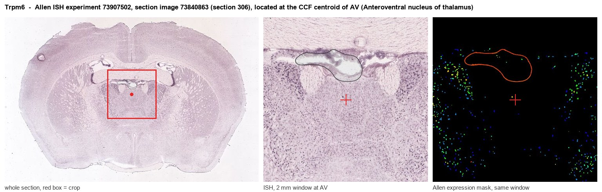
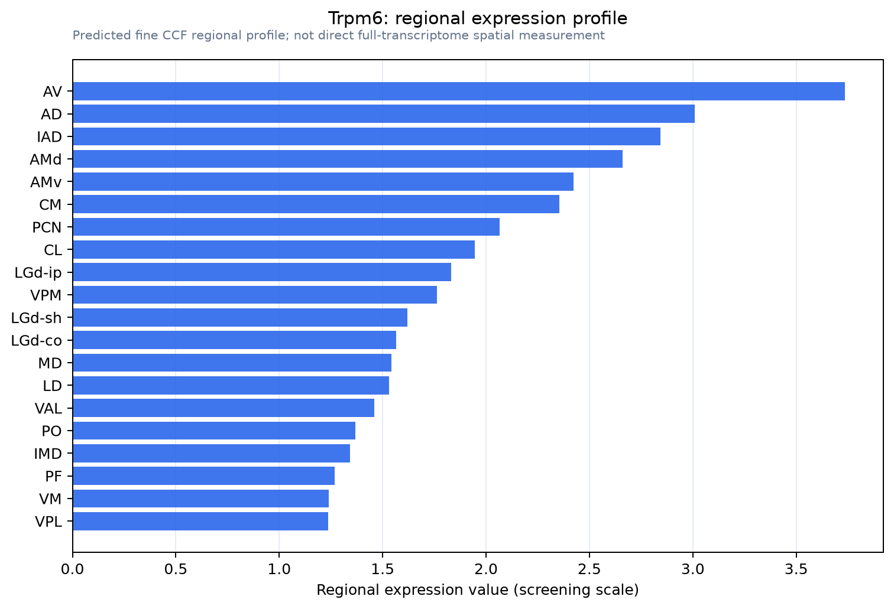

Trpm6
Transient receptor potential cation channel subfamily M member 6 (EC 2.7.11.1) (Channel kinase 2) (Melastatin-related TRP cation channel 6) [Cleaved into: TRPM6 kinase, cleaved form]
Spatial tier: RESTRICTED · Class: ION_CHANNEL · Top region: AV (Anteroventral nucleus of thalamus) · Positive regions: 26/554
Function in AV: evidence, prediction, innovation
- Gene function
- TRPM6 is a chanzyme: a magnesium- and calcium-permeable TRP channel fused to a C-terminal atypical alpha-kinase. It is the gatekeeper of intestinal and renal magnesium absorption, forms heteromers with its close relative TRPM7, and cross-phosphorylates TRPM7 to control its trafficking and magnesium sensitivity. Human loss-of-function mutations cause hypomagnesaemia with secondary hypocalcaemia.
- Region function
- The anteroventral thalamic nucleus is a Papez-circuit node receiving mammillothalamic and subicular input and projecting to retrosplenial and entorhinal cortex; it carries head-direction and theta signals and is required for spatial and episodic-like memory.
- Published in this region
- inferred No region-specific literature found. TRPM6 expression is essentially confined to intestine and kidney (de Baaij et al. 2015); the broadly expressed brain magnesium channel is its partner TRPM7, and TRPM6 acts mainly by regulating TRPM7 trafficking and gating.
- Predicted function
- Prediction: if TRPM6 protein is genuinely present in AV neurons it would most plausibly act as a regulatory partner of TRPM7, setting intracellular magnesium and hence the magnesium block of NMDA receptors at mammillothalamic and corticothalamic synapses. AV-restricted Trpm6 deletion is predicted to raise NMDA-receptor magnesium block, reduce thalamic burst firing and impair spatial memory acquisition; because no TRPM6-selective drug exists, the practical test is conditional deletion combined with TRPM7 blockers such as NS8593 to isolate the TRPM6-dependent component.
- Innovation
- ★★★★★ 5/5 Nobody has studied TRPM6 anywhere in the brain, so any AV finding would be novel, but the low prior probability that the transcript reflects functional neuronal protein tempers the payoff.
- Tools
- Trpm6 germline knockout (embryonic lethal) and Trpm6 floxed alleles; no selective TRPM6 pharmacology - TRPM7-directed NS8593 and waixenicin A are the closest available; commercial anti-TRPM6 antibodies are poorly validated.
- References
Direct evidence located at the region

Allen ISH experiment 73907502, section image 73840863 (section 306): the section that contains the CCF centroid of Anteroventral nucleus of thalamus according to the Allen image-to-atlas alignment (reference_to_image), with a 2 mm window around that point. Left: whole section, red box = window. Middle: ISH signal. Right: Allen's expression-mask view of the same window. open this image in the Allen viewer
Direct spatial evidence

Regional expression figure

Predicted WMB × fine-CCF profile; not direct full-transcriptome spatial measurement.
Spatial profile
Evidence and specificity
- Evidence status
- PREDICTED_FINE
- Direct sources
- None; predicted localization only
- Exclusive threshold
- 12 positive regions out of 554
- Spatial specificity
- 0.345
- Top-region fraction
- 0.061
- Filter status
- PASS
Interpretation limits
- Cell-type-to-region projection is imputed expression, not direct spatial measurement.
- Adult reference atlases do not establish stability across age, sex, strain, state, or disease.
- Transcript abundance does not guarantee protein abundance or genetic-tool performance.